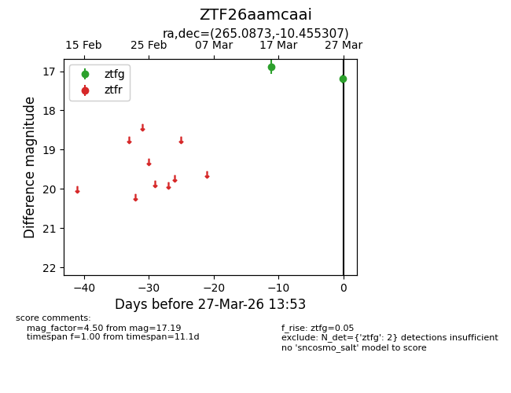
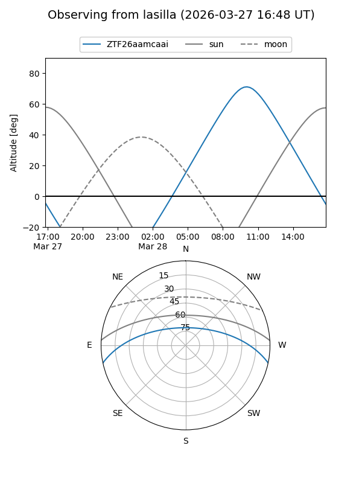
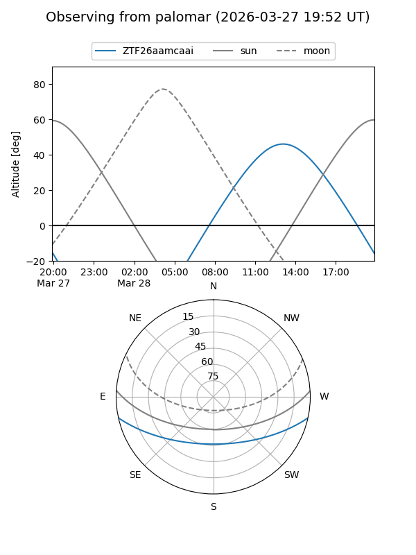

ZTF26aamcaai
Target ZTF26aamcaai at 2026-03-27 13:56
Aliases and brokers:
FINK: link
Lasair: link
ALeRCE: link
alt names
ZTF26aamcaai (ztf,fink_ztf)
Coordinates:
equatorial (ra, dec) = 265.0873,-10.45531
equatorial (HMS+DMS) = 17:40:20.96,-10:27:19.10
galactic (l, b) = (15.2591,+10.62594)
Flags:
Photometry:
last ztfg=17.19
2 ztfg detections
Lightcurve

Visibility


Additional plots